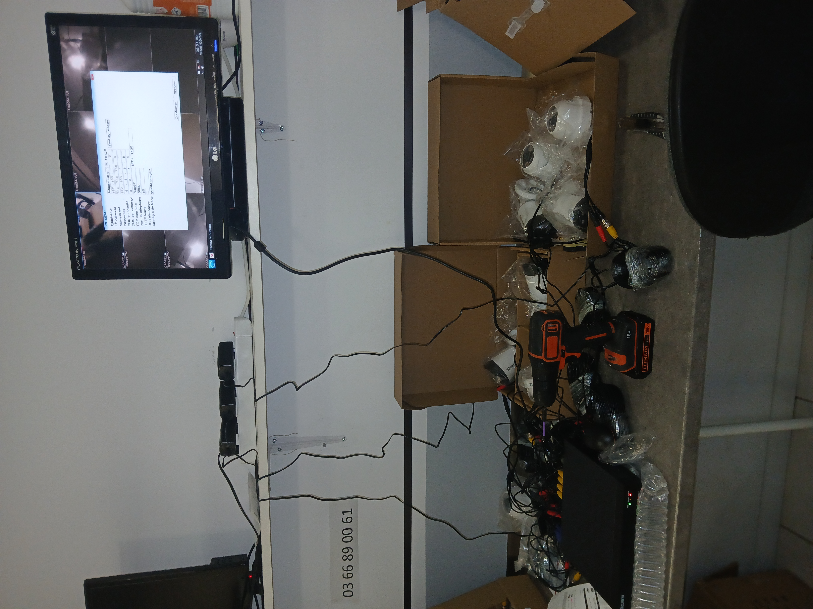

Expériences professionnelles
Stage - TIKE Sécurité (Avril-Juin 2025)
- Programmation et installation d’alarmes
- Installation et configuration de caméras IP et NVR
- Audit site e-commerce & vérification stock
- Développement application web inventaire 
Employé dans un cyber (Guinée)
- Vente de produits électroniques
- Aide à la rédaction et impression